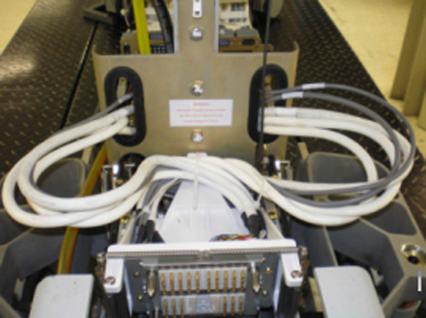
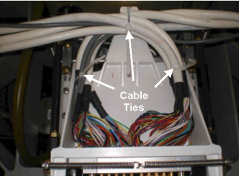

Operating Documentation
Direction 5500113, Rev# 3
Module Version 8.0, Version Date 8/30/10
Operating Documentation |
| ||||
| ELECTROCUTION HAZARD! | ||||
| HIGH VOLTAGE PRESENT. | ||||
| USE PROPER LOCK OUT / TAG OUT PROCEDURES BEFORE servicing and/or maintaining THE DOCK. |
| ||||
| POSSIBLE PERSONAL INJURY! | ||||
| THE DOCK CONNECTOR REPLACEMENT PROCEDURE REQUIRES MOVEMENT OF FERROUS MATERIAL IN CLOSE PROXIMITY TO THE MAGNET. | ||||
| Therefore, two Field engineers are required at all times. |
| ||||
| Personal injury and equipment damage | ||||
| Strong Magnetic Field | ||||
| When servicing any magnetic equipment, it is critically
important that the service engineer consciously plan the path to be
taken when moving highly ferrous devices in the magnet environment.
the path should be as far from the magnet as practical and avoid high
flux-density fields. Safety Requirements
When planning a service path, it is critical that the path be clear and sufficiently wide. Ensure that there are no trip hazards, obstacles, clutter, slippery surfaces or other items even partially restricting the path. If there are portable obstacles in a path, remove them from the area and replace them after the service action is completed. It is required to walk the path prior to beginning service to ensure that there is sufficient space through which to pass for yourself and the object being serviced. |
Undock the Patient Table and move it out of the magnet room.
Fasten the Upper Base Cover in the up position and remove the Lower Base Cover. Refer to the Patient Table Upper and Lower Base Cover Removal procedure.
Remove the Front Base Cover.
Lower the table Lock Safety Bar. Lower the table and verify that all weight is resting on the lock bar. (See Illustration 1.)
Remove the two screws on each side of the Table Interface Panel (TIP). This lets you move the panel backward allowing access to the cable connection screws. (See Illustration 2.)
Remove all cable connections from the front side of the TIP. (See Illustration 3.)
Pull the cables through both sides of the table support holes. (See Illustration 5.)
Illustration 5: Cable Path Through Table Support Holes

| ||||
| Behind the Connector Plate, there are two groups of cables, left group and right group. Before you cut the cable tie to remove the cables, pay very close attention to how the cables are coiled and tied. The coiling allows the cable bundle to expand and contract as the Table Frame Connector assembly moves forward (dock) and backward (undock). When installing the replacement assembly, it is imperative that you coil the cables according to specification for the assembly to move forward and backward on its track. | ||||
Cut the cable tie holding the bundled cables together behind the Connector Plate. (See Illustration 6.)
To remove the Table Connector Plate, follow these steps:
Use a slotted screwdriver to remove the four screws from the face of the Connector Plate. (See Illustration 7.)
To remove the plate and cables, guide the Connector Plate forward with one hand while feeding the cables through the opening in the frame assembly. (See Illustration 8.)
Feed the cables through the opening in the frame assembly, and then lay them out to one side while holding the plate in place at the front of the frame assembly.
Replace the four slotted screws on the face of the plate.
Separate cables by port sides and install, without fully tightening, three cable ties. Tie strap ends of cable groupings on the left side, right side and front of connector. (See Illustration 9.) Keep cable for interlock behind cables.
Illustration 9: Cable Separation

| ||||
| Potential Equipment Damage! | ||||
| Be careful with the large black cable connectors. | ||||
| There are small mounting screws and they can be easily stripped. |
To route the cables through the table support holes, first take the right side cables and create a single loop, then feed the cables through the right side table support hole and reconnect them to the front side of the TIP. Make sure the Table Top Interlock table is behind cable loop. Repeat the process for the left side cables. (See Illustration 5.)
Replace both screws on each side of the TIP.
Once the connection is made, secure the cable ties for proper strain relief of the cables. (See Illustration 10.) Trim cable ties as necessary.
Illustration 10: Secure Cables with Cable Ties

Lift the cable loops and install the cable tie. (See Illustration 6.) Trim as required.
Carefully push the frame assembly back into its retracted position while inspecting the coiled cable bundles to ensure that they maintain their loop without interference. Repeat the process of manually moving the frame assembly forward and back to confirm integrity of coiled cable bundles. (See Illustration 11.)
Raise the table, and then move the table Lock Safety Bar to the up position. (See Illustration 1.)
Replace the Front, Upper and Lower Base Covers.
Move the table back into the magnet room and redock the Patient Table.
Go to Finalization.
Follow instructions in Dock Removal and Installation to remove dock from the magnet room.
Proceed to the next section.
When the dock is outside of the magnet room, using a 3/4-inch wrench, remove four bolts (two on each side) to unfasten the dock cover from the dock base. (See Illustration 12.)
Turn the dock cover upside down. (See Illustration 13.)
Using a 5/16-inch nut driver, remove the four nuts from the front of the Connector plate. (See Illustration 14.)
Keep the Dock Connector Spacers in place, attached to the dock. (See Illustration 15.)
Route the cables through the opening inside the dock cover to remove the Dock Connector Plate assembly.
Route the four, large black connectors (two at a time) through the opening in the dock cover, followed by the two large white connectors, and then the remaining two gray cables. (See Illustration 16.)
Reattach the Dock Connector Plate to the Connector Spacers on the front of the dock, paying attention to the correct orientation of the plate. (See Illustration 15).
Carefully turn the dock cover right side up, reconnect the dock switch connector, and place the dock back on the dock base. Reattach the dock bolts. (See Illustration 12).
Follow the instructions in Dock Removal and Installation to install the dock.
Proceed to the next step.
Undock the patient table and move it from the magnet room.
Remove the Upper Bellows, Lower Base Cover, Front Upper Right and Front Base Covers. See Patient Table Upper Bellows and Lower Base Side Cover Removal for more information.
Lower the table Lock Safety Bar. Lower the table to ensure all weight is resting on the lock bar. See illustration below.
Locate the Touch and Go Cable assembly and disconnect it from the switch. See the illustration below.
If necessary, cut the Touch and Go Cable tie-down connection. See the illustration below.
At the Connector Mounting Plate, disconnect the cable and replace it. See the illustration below.
Run the Coil Datapath Diagnostics procedure on all P and A coil connectors to validate a successful cable signal flow.
Check dock up functionality using the operator's console.